Lab 1: Introduction to Java & Eclipse
Objectives
- Use the Eclipse IDE to write, compile, and run Java programs
- Write a basic “Hello World” program
- Write Java code to perform a simple dialog-based interaction
Part 1 Hello Eclipse!
The Eclipse Integrated Development Environment (IDE) is a powerful tool for editing, compiling, and running programs. It has many other functionalities, but we will focus on the basics today. Let’s get started.
-
Find the Eclipse application on your computer and open it. If this is your first time starting Eclipse, you might see a window similar to the one shown below. Eclipse asks you to specify your workspace. This is the folder where you will be saving all your Java programs. Think about a good place (e.g. MyCourses/SER120/Programs).
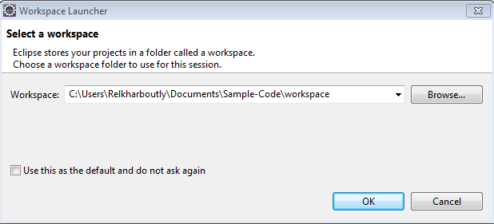
-
Browse to your folder for SER 120 programs (create one if you do not have one yet), and then click the OK button. You will see the screen shown below:
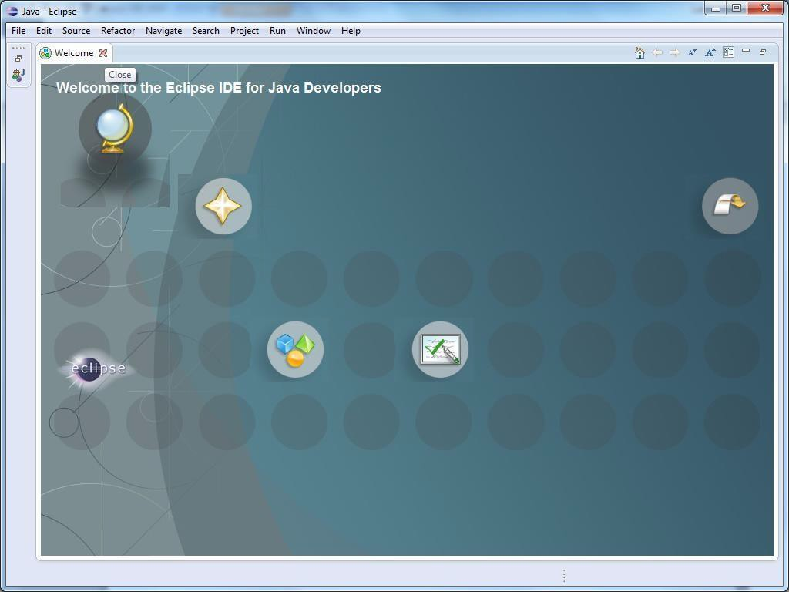
-
The welcome screen will appear for first-time users. If you mouse over the bubbles, they will reveal various places you could go to get more information. For now, just close the folder by clicking on the X in the Welcome tab in the top-left part of the screen (just above the Welcome to the Eclipse IDE for Java Developers message).
The Java Perspective
Once you close the Welcome screen you will get to the Java Perspective view. Maximize the application window. This is essentially your home base for doing all your Java work. Think of Eclipse as a carpenter’s workbench with all sorts of tools to support the carpenter’s work. Except, that the carpenter is now a programmer and the tools are software-based. Let’s spend some time getting familiar with the Java Perspective/the workbench. Then we can write and run some programs.
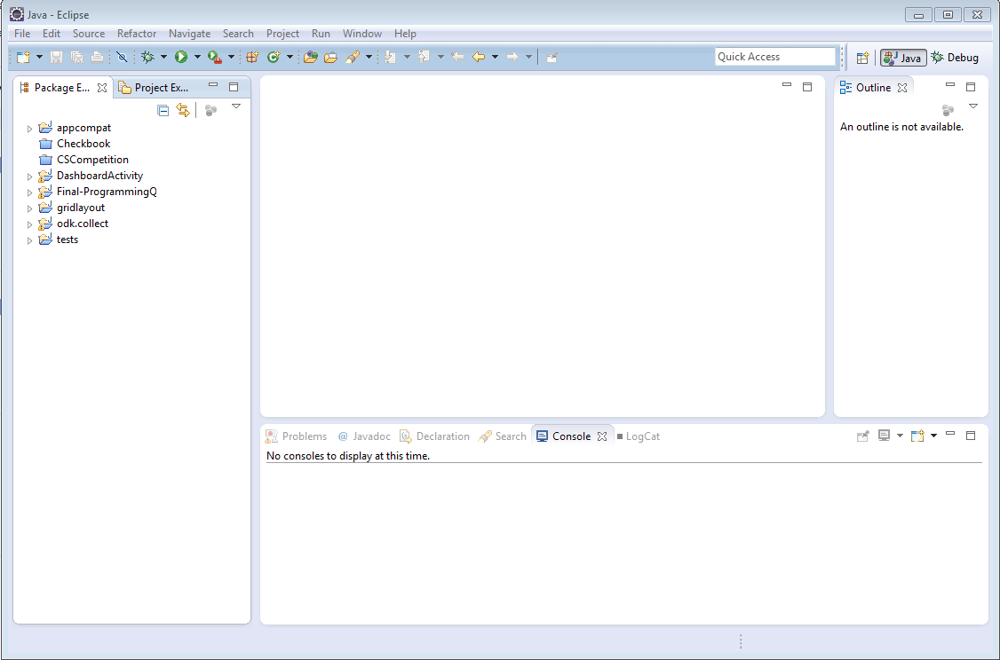
Apart from the Menu options/icons, the default workbench area is divided into 5 major views/sections (see above):
-
Package Explorer: This will show your project files (each folder at the top level typically represents a separate project)
-
Editor: This is where you edit/write code
-
Problems: This is where problems are reported. Also notice tabs for Javadoc, Declaration, Diagrams, etc. We will visit these later.
-
Task List: TODO tasks listed here. You can close this. We will not need this for some time.
-
Outline: This will show an outline of your code (to be used later).
For now, just focus on the Menu options, the Package Explorer, and the Editor panes. Note: If you accidentally close any of the windows and you like to restore the java perspective, go to Window, then choose Reset Perspective.
Task 1: New Java Project and Hello World
To create a new project in Eclipse, from the File menu, select New and then select Java Project (see below):
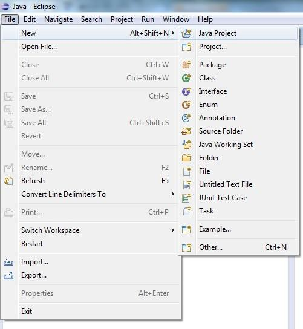
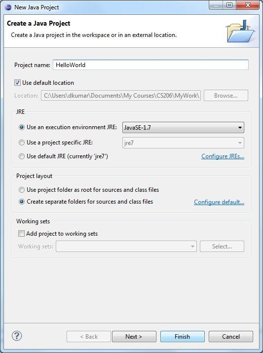
Every Java program you write in Eclipse will be part of a Project. After you select the New Project option, you will get a pop up window (see above). This is a form to fill out some details about the kind of project you are creating.
Enter the name for your project in the “Project name” field. We have chosen HelloWorld as you can see. Click Finish to accept the default settings and create the project, now named HelloWorld.
You will notice that the HelloWorld project is now listed in the Project Explorer view. Click on the little triangle to expose the contents of the project as shown in the figure below. Eclipse created a folder called HelloWorld in your specified workspace folder. In it, it has placed another folder called src which is currently empty. “src” is short for source code, and this is where the code for your program needs to go.

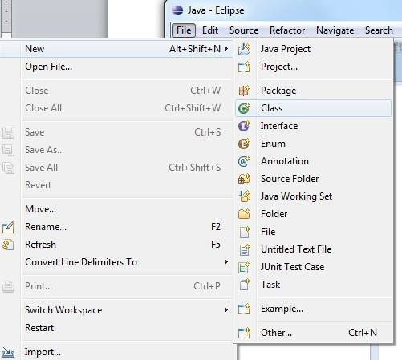
To write some Java code, we need to create a Java class (we will learn about classes later). Select the File Menu again, followed by New, and this time select “Class” (see above). Another form window will pop up as shown in Figure 7.
Enter the name of the class (HelloWorld) in the Name field of the form. The class name does not need to be the same as the project name; we just chose to name the class so, because it will contain a little Hello World program.
Also, make sure the little box against public static void main(String[] args) is checked. Your form should match the image below. Next, click Finish.
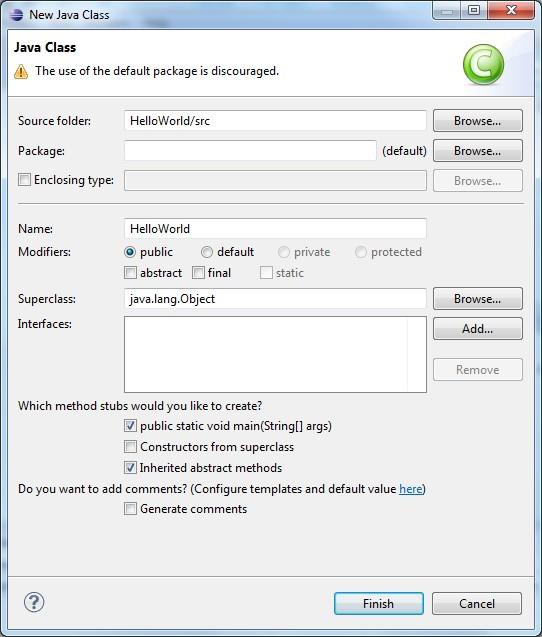
Eclipse has created, based on the information you provided in the previous form, a template Java program for you. Now, delete the TODO comment stub and add the System.out.println() command in the main() method:
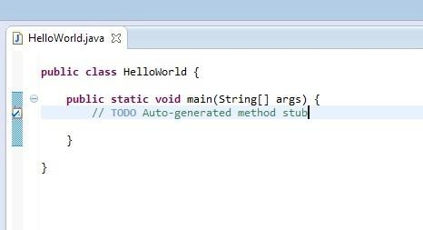
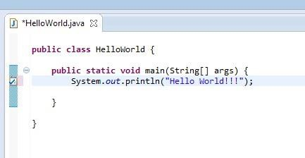
Program Execution
Now you are ready to run the program. But first, be sure to Save the program (from the File Menu select the Save option). From the Run Menu, select the Run option (see the figure below).
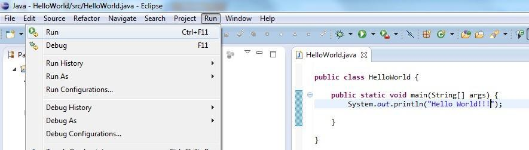
Stuff happens. Very fast! If you focus on the Console view below the Editor view, you will see the output of your program:
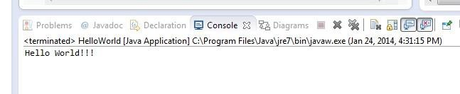
Make some changes to the text that the program prints and run the program a few more times. Also, notice the icon bar below the Menu Bar. Many of the Menu items are available in that bar so you can just click and go.
Task 2: Dialog-Based Hello World
Create a new class called HelloWorldDialog and copy the
following code into the file:
/**
* Edit this header comment to include your name and a description of this
* class/program/assignment.
*/
import javax.swing.JOptionPane;
public class HelloWorldDialog {
public static void main(String[] args) {
JOptionPane.showMessageDialog(null, "Hello World!!!");
}
}
Run the program. This time the program should display a pop-up window instead of printing to the console.
Task 3: Dialog-Based Interaction
Create a new class called GreetingDialog and copy the
following code into the file:
/**
* Edit this header comment to include your name and a description of this
* class/program/assignment.
*/
import javax.swing.JOptionPane;
public class GreetingDialog {
public static void main(String[] args) {
String name = JOptionPane.showInputDialog("Enter your name:");
JOptionPane.showMessageDialog(null, "Hello " + name + "!!!");
}
}
Run the program and see what happens!
Locating Your Code
When you’ve finished with an assignment and want to submit your work, you’ll need to find the .java files you wrote in Eclipse. These are located in your workspace folder. You can check your workspace’s location by clicking “File”, “Switch Workspace”, “Other ...”.
Each project has its own folder in your workspace, and you’ll find your source code in the “src” folder (as discussed earlier) within the project folder. Make sure you’re submitting the .java files, not the .class files. The folders in src should all be .java files, but if you accidentally look in the “bin” folder, you’ll see .class files with the same names as your classes. The .class files are compiled code, and for the most part they’re not human-readable. If you send me those instead of your .java files, I won’t be able to read or (in many cases) run your code.
Review & Submission
When you have completed the lab, please upload all Java source code to Blackboard in a single submission. Make sure you have completed each task before submitting the assignment.
I will review all lab assignments after the deadline. You should usually receive feedback within a week of the deadline.